In this project I learned image processing techniques, starting with 2D convolutions and fildering, before moving to frequency domains used for sharpening, cool hybradization and multi-resolution blending.
Like we saw, a 2d convolution takes a sliding kernel, or filter, across an image adn gets sum of multiple element matched products. Thus we need to flip the kernel on its x and y axis before using it.
I made a convolution from scratch only leveraging Numpy. I did this in 3 ways: first with 4 nested loops (iterating ove image and kernel coordinates), then with with 2 loops (leveraging vectorized Numpy operations). I used zero-padding to handle boundaries. I also then used sciPy at the end to verify all looked well.
'For Four' Loop Code snippit:
for yCoordinate in range(imageHeight):
for xCoordinate in range(imageWidth):
currentSumOfProducts =0
# Loop over the kernel dimensions
for kernelY in range(kernelHeight):
for kernelX in range(kernelWidth):
#(Index calculations and padding)
# Access kernel in reverse order (flipped)
kernelValue = kernelFilter[kernelHeight - 1 -kernelY,kernelWidth - 1 - kernelX]
#Multiply and accrue
currentSumOfProducts +=imagePixelValue *kernelValue
outputImage[yCoordinate, xCoordinate] =currentSumOfProducts
# Flip the kernel for convolution
flippedKernel = np.flip(kernelFilter)
#do convolution using 2 loops
for yCoordinate in range(imageHeight):
for xCoordinate in range(imageWidth):
#get region of interest (ROI) from padded image
imagePatch =paddedImage[yCoordinate:yCoordinate + kernelHeight, xCoordinate:xCoordinate + kernelWidth]
#Sum of element matched multiplications
outputImage[yCoordinate, xCoordinate] =np.sum(imagePatch * flippedKernel)
All methods the methods gave indistinguishable results with zero-padding. Their runtimes did vary though. SciPy was the fastest, followed by the Two Loop (vectorized) implementation, with the Four Loop implementation being the slowest, which is expected.
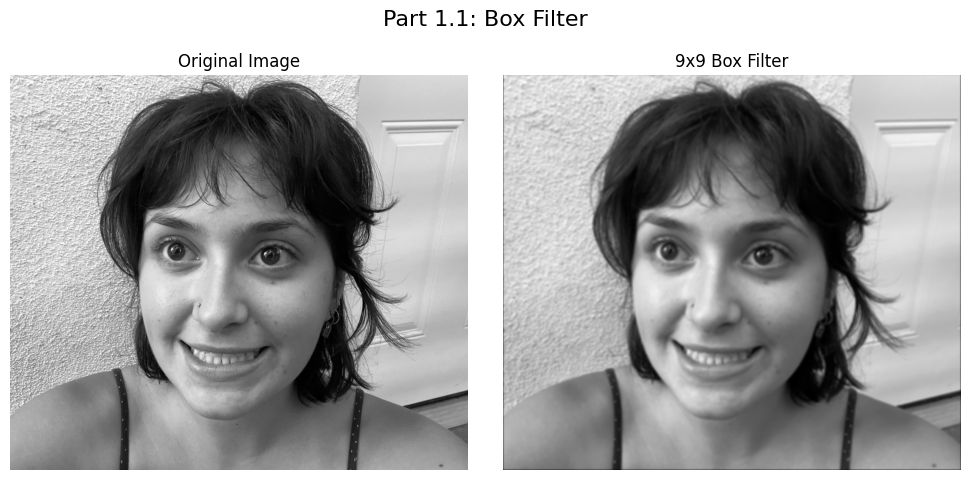
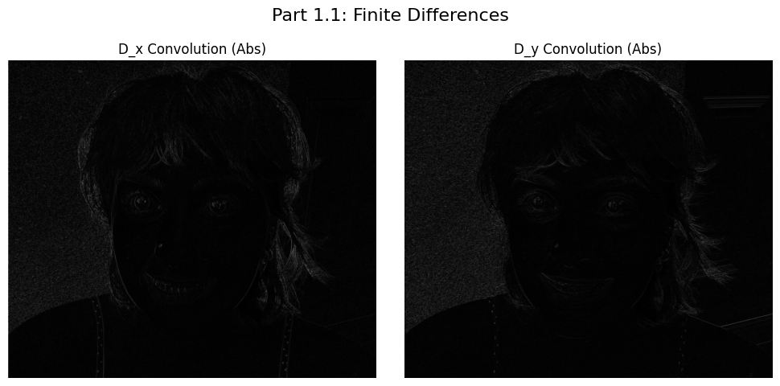
I then got the partial derivatives of an image using the finite difference operators D_x and D_y, using centered difference kernels like \(0.5 \times [-1, 0, 1]\)).
The gradient magntude is calculated as \(\|\nabla f\| = \sqrt{f_x^2 + f_y^2}\). This diretly represents edges, as these are just areas of the most rapid change'.
For an edge image,I binarised the gradient magnitude via threshold multiplication
Threshold: A threshold of T=0.06 was chosen. I tweaked this many times, so this was decided mainly through trail and error but it seems to balance capturing fainter, real edges while suppressing minor noise. The results without smoothing are super noisy.
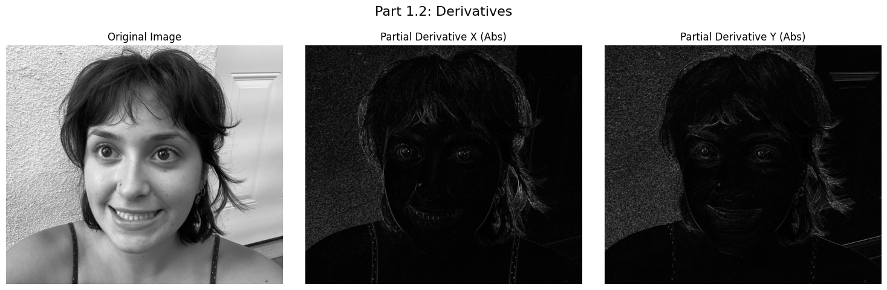
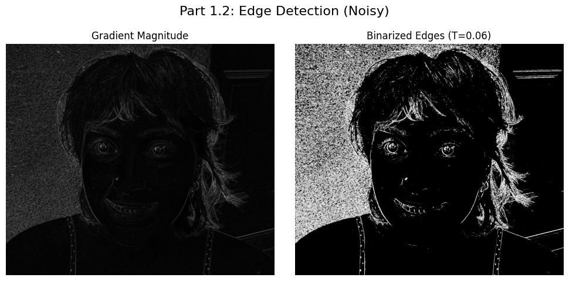
The finite difference operator accelerates noise, so as we saw in lecture we need to smooth the image using a gaussian before applying derivative filter. I created the guassian filter using cv2.getGaussianKernel and taking the outer product of the 1D kernel with its trnspose.
Smoothing the image before taking derivatives significantly reduces noise in the gradient magnitude image, garnering in more clean and localized edge detection.
Also as we saw, from the associativity of convolution, \((I * G) * D = I * (G *D)\). As such one can combine the filters into a single Derivative of Gaussian (DoG) filter via convolving G with D.
I verified that blurring the image and then taking the derivative yields the same result as convolving the image directly with the DoG filter, they were again indistinguishable.
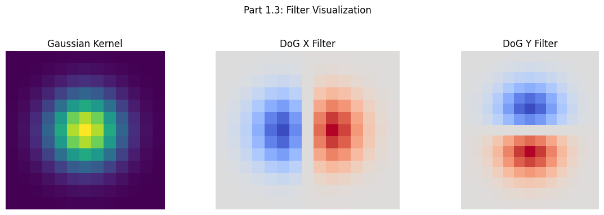
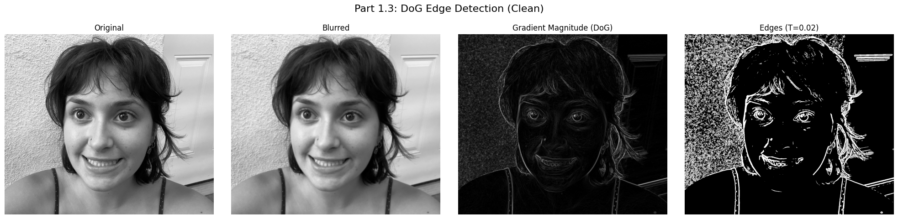
I made "Unsharp Masking". This is a gaussian filter which essentially just acts like as a low pass filter. Via the subtraction of the blurred (low-frew) version from the original image, the high frequencies-- or more intuitvely details in an image-- can be isolated.
\[ \text{Details} = \text{Original} - \text{Gaussian Blur}(\text{Original}) \]
The sharpened image is created by adding an amplified amount (\(\alpha\)) of those details back to the original image.
\[ \text{Sharpened} = \text{Original} + \alpha \times (\text{Details}) \]
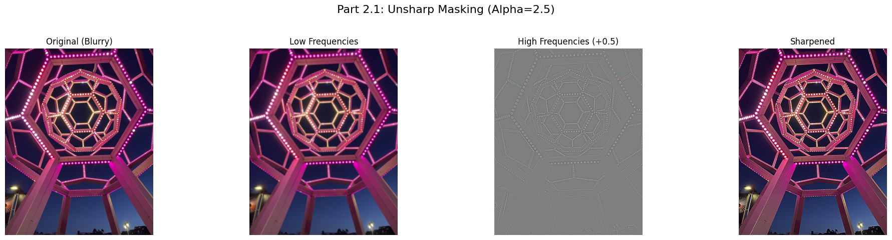
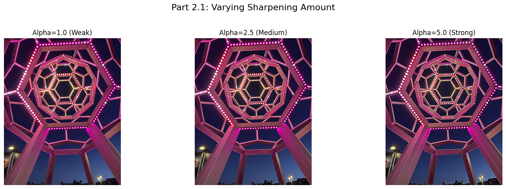
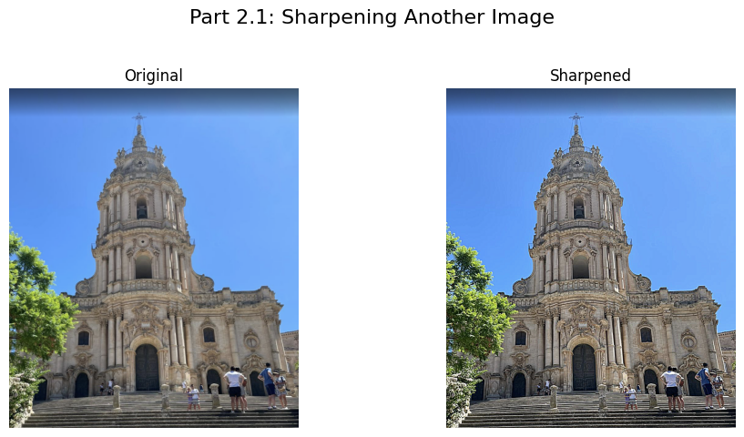
Sharpened image, artificially blurred, and then sharpen it again. I think the effect is pretty noticable.
Observations: The sharpened image gets back some of the crispiness, but doesn't really perfectly match the original sharp image. This is beucase blurring is lossy and information lost during blurring can't be fully gotten back, so sharpening often introduces artifacts like the small halos around edges.
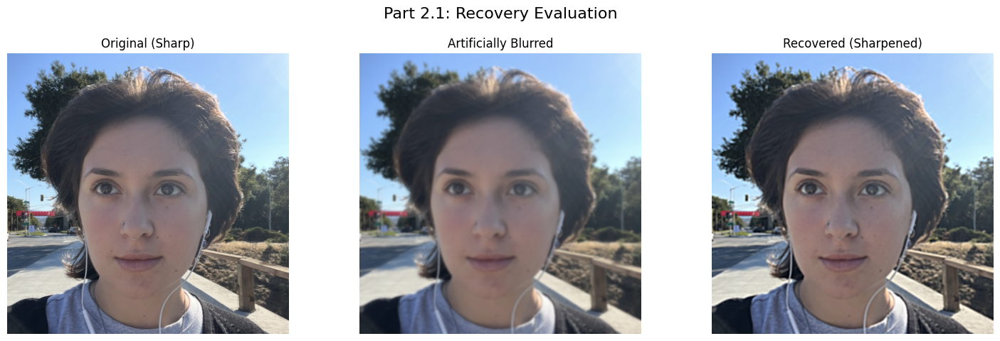
Hybrid images are cool photos where if you squint or look far away you see one image, and then up close you see another. THis phenomenon areises since high frequencies dominate up close, but low frequencies are more noticeable from far away. So, a "hybrid image" is created via blending the high-frequency component of one image with the low-frequency component of another..
Process: 1.Align input photos manually (for coolest results, and I wasn't able to automate this step). 2. Low-pass filter Image A (Gaussian blur). 3. High-pass filter Image B (Original -Gaussian blur). 4. Sum filtered images.
Cutoff frequencies (sig values) were also garnered via trail and error. Low sigmas of value 8 distant image for the coarse features. High sigmas (5) were used for the nearby image for final detials.
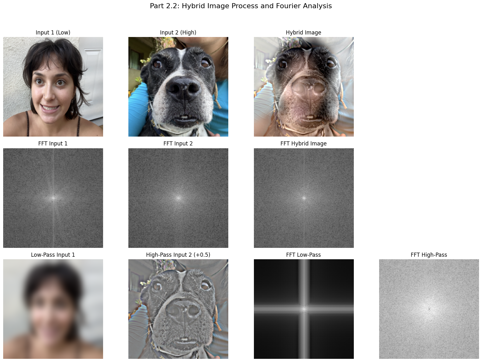
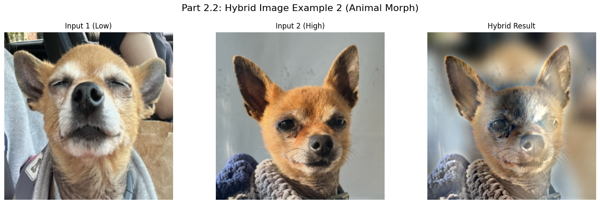
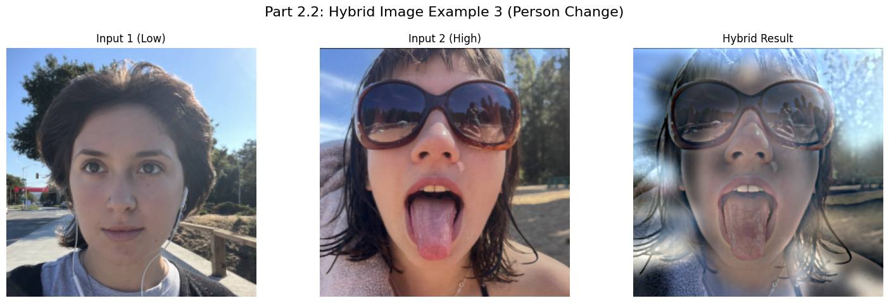
I made gaussian and Laplacian Stacks, which, unlike Pyramids, stacks dn't downsample the image and instead all levels retain the original dimensions.
Gaussian Stacl: Level \(G_0\) is the orig image. Follwing levels \(G_{i+1}\) are created via suessive a Gaussian filters to \(G_i\).
Laplacian Stack: Each level \(L_i\) notes the difference between successive Gaussian levels (\(L_i = G_i - G_{i+1}\)), representing a specific band of frequencies. The final level is the coarsest Gaussian residual.
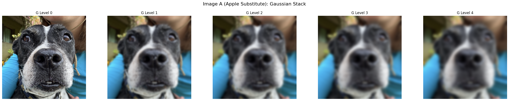
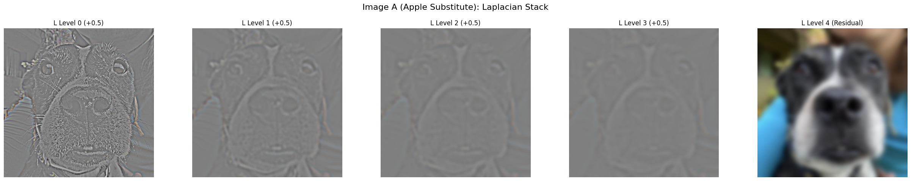
Multiresolution blending is supposed to 'seamlessly' joins two images by computing the seam separately at each frequency band with laplacian stacks.
Process: Create Laplacian Stacks for inputs A & B (\(LA, LB\)), and then a Gausian Stack for the mask (\(GM\)). This stack is esssentiallysmooths the transition boundary. Then, stacks are blended at each level \(i\):
\[ LS_i = GM_i \times LA_i + (1 - GM_i) \times LB_i \]
Final image is gotten via collapsing, or summing rather, the blended Laplacian stack (\(LS\)). To me a big sigma (15) for the mask stack to ensure a wide, smooth transition looked the best, I think this maybe could've been lower if the dog photos were better aligned, but I couldn't some good ones where their heads were the same heights on two photos.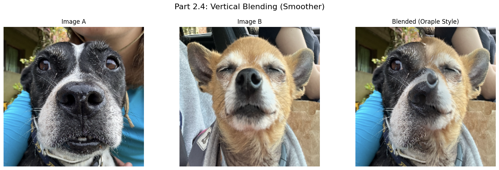
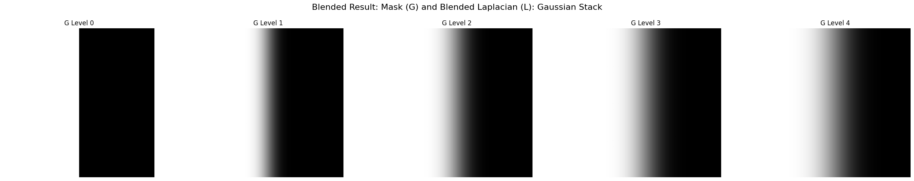
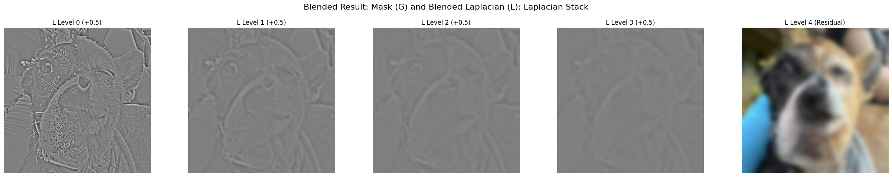
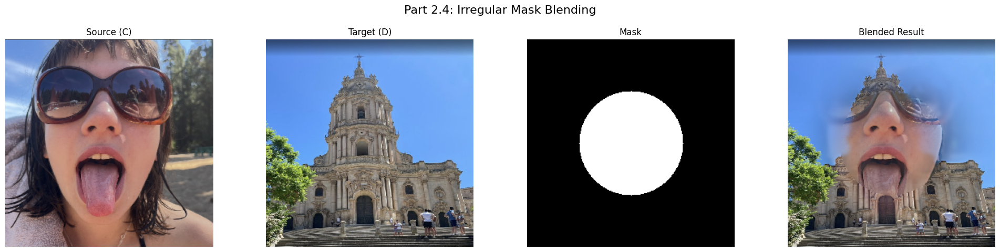